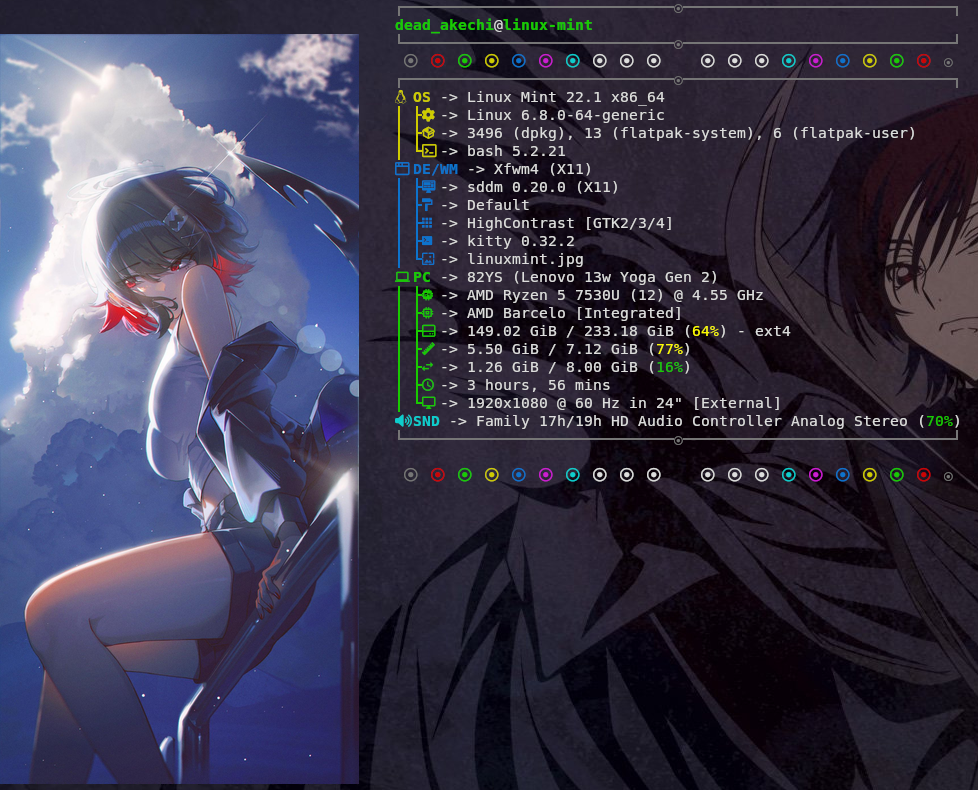

Welcome to..
Dead Akechi's website


I'm a linux user that may get a little too insane at times, about privacy, or other things (mostly the lack of money i have)
_____________________________________________________________________________________ |||||||||||||||||||||||||||||||||||||||||||||||||||||||||||||||||||||| ‾‾‾‾‾‾‾‾‾‾‾‾‾‾‾‾‾‾‾‾‾‾‾‾‾‾‾‾‾‾‾‾‾‾‾‾‾‾‾‾‾‾‾‾‾‾‾‾‾‾‾‾‾‾‾‾‾‾‾‾‾‾‾‾‾‾‾‾‾‾‾‾‾‾‾‾‾‾‾‾‾‾‾‾‾
i want to spend time working on this site, and make it into something i can be proud of, but i don't really know html, css, or javascript, but plan to learn the languages some time, so if you are interested, check in every now and then to see how that is going, even though i garantee you that it wont have many changes
_____________________________________________________________________________________ |||||||||||||||||||||||||||||||||||||||||||||||||||||||||||||||||||||| ‾‾‾‾‾‾‾‾‾‾‾‾‾‾‾‾‾‾‾‾‾‾‾‾‾‾‾‾‾‾‾‾‾‾‾‾‾‾‾‾‾‾‾‾‾‾‾‾‾‾‾‾‾‾‾‾‾‾‾‾‾‾‾‾‾‾‾‾‾‾‾‾‾‾‾‾‾‾‾‾‾‾‾‾‾
i tend to (barely) rice my computer from time to time 
i cant be bothered installing arch to use hyprland, as i do not want to have to back up everything. i do want to use hyprland though, but because im on mint, it refuses to install.
_____________________________________________________________________________________ |||||||||||||||||||||||||||||||||||||||||||||||||||||||||||||||||||||| ‾‾‾‾‾‾‾‾‾‾‾‾‾‾‾‾‾‾‾‾‾‾‾‾‾‾‾‾‾‾‾‾‾‾‾‾‾‾‾‾‾‾‾‾‾‾‾‾‾‾‾‾‾‾‾‾‾‾‾‾‾‾‾‾‾‾‾‾‾‾‾‾‾‾‾‾‾‾‾‾‾‾‾‾‾
This is the last part before i say some stuff about myself, anyway. if you ever talk to me, just know i am the least likeable person you will ever meet (not intended, i just kind of....hate most people, but i try to be nice to people) :3
_____________________________________________________________________________________ |||||||||||||||||||||||||||||||||||||||||||||||||||||||||||||||||||||| ‾‾‾‾‾‾‾‾‾‾‾‾‾‾‾‾‾‾‾‾‾‾‾‾‾‾‾‾‾‾‾‾‾‾‾‾‾‾‾‾‾‾‾‾‾‾‾‾‾‾‾‾‾‾‾‾‾‾‾‾‾‾‾‾‾‾‾‾‾‾‾‾‾‾‾‾‾‾‾‾‾‾‾‾‾
| NAME: | Dead Akechi |
|---|---|
| AGE: | Not telling you :3 |
| HOBBIES: | I like linux, computers, games, anime, and other bullshittery |
| FAVOURITE GAMES (top 10, work in progress, not finished | |
| 1. The Xenoblade Series | |
| 2. NieR | |
| 3. Doki Doki literature club | |
| 4. Astral Chain (amazing game by the way, i do reccomend playing it) | |
| 5. limbus company | |
| 6. Sanabi | |
| 7. UltraKill | |
| 8. Ena Dream BBQ | |
| 9. The milk games (milk inside of a bag of milk inside of a bag of milk and its sequel) | |
| 10. |
| FAVOURITE MUSIC: | music (insert sunglasses emoji here) |
|---|
website template: https://netvista.neocities.org/netvistacentral/netvistastarter
background image: https://dead-akechi.nekoweb.org/shorter%20web%20background.gif

{kind=link}